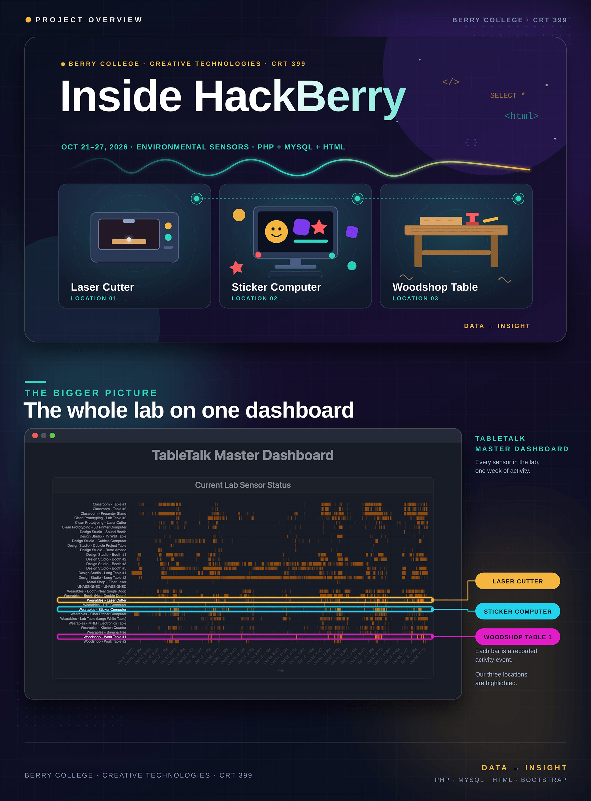
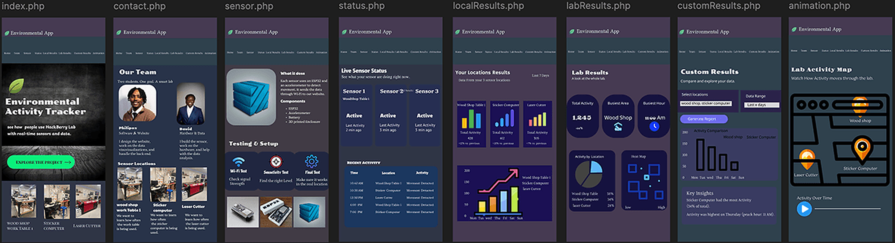
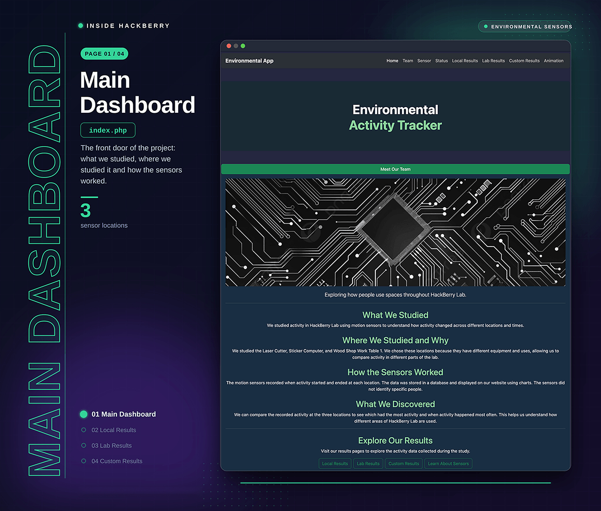
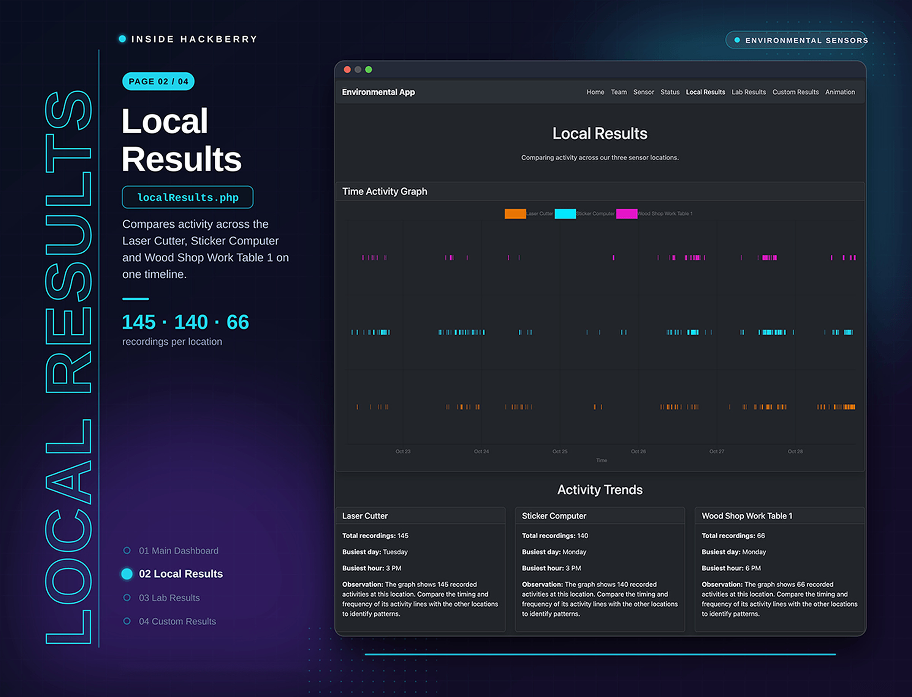

Overview: Making sensor data useful
Inside HackBerry is a web-based activity-tracking application developed collaboratively as part of our Creative Technologies coursework at Berry College. The project investigates how shared spaces within the HackBerry Lab are used throughout the day and across the week.
Using environmental sensor data collected from three selected locations, we developed a web application that organizes the information and presents it through interactive graphs and visual reports.
Our goal was to make sensor data easier to understand and identify patterns in activity, including the busiest days, locations, late-night activity, and usage during open lab hours. We chose this project because we wanted to explore how technology can help us better understand the spaces around us. Rather than simply collecting numbers, we wanted to turn data into information that people could actually use.
What the app reveals
Busiest Days
Which days of the week see the most activity in the lab.
Busiest Locations
How usage compares across the Laser Cutter, Sticker Computer, and Woodshop Table.
Late-Night Activity
When and where the lab is still in use after hours.
Open Lab Hours
How much activity happens during scheduled open hours.
From raw data to clear insight
Collect
Motion sensors, each built from an ESP32 and an accelerometer, recorded when activity started and ended at the Laser Cutter, Sticker Computer, and Woodshop Table. The sensors did not identify specific people.
Store
Each sensor sent its readings over Wi-Fi to a MySQL database, building a record of activity from Oct 21–27, 2026.
Visualize
I built the PHP and Bootstrap website with a live sensor status page, local and lab-wide results, custom reports, and an animated map of lab activity.
Interpret
We compared the graphs to find busiest days and hours at each location and to see how activity moves through the lab.
What we found
Laser Cutter
145 recordings. Busiest on Tuesday, with a peak hour of 3 PM.
Sticker Computer
140 recordings. Busiest on Monday, with a peak hour of 3 PM.
Woodshop Table 1
66 recordings. Busiest on Monday, with a peak hour of 6 PM.
The project in pictures




Why it matters
Understanding how a space is used helps us make better decisions about it. This project showed us how technology can turn everyday data into something people can learn from.
Back to projects